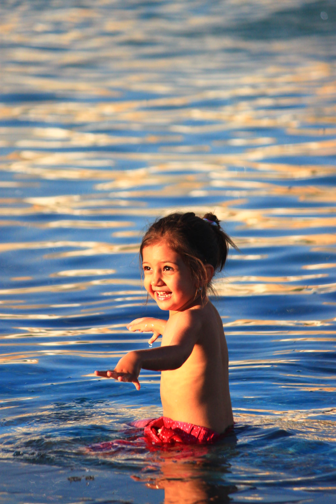

知道我要去伊朗，有些朋友不能理解，大概是觉得它是个和阿富汗一样破落危险的地方。这实在是个误会。只是因为与朝鲜一样受到美国的封锁打压，长期与所谓“文明世界”隔绝，所以人们对它才不够了解。其实在中东近东这个纷乱的世界里，伊朗算是非常安全的地方，因为：
伊朗人是波斯人，说波斯语，不是阿拉伯人。
伊朗是最大的什叶派国家。什叶派只占穆斯林人口的15%不到，属于后妈生的。伊朗与周边阿拉伯世界关系一般吧，因为阿拉伯国家以逊尼派为主。没有大摩擦，倒是有个共同讨厌的对象——以色列。
当代宗教极端组织绝大多数都是逊尼派，比如基地组织、ISIS。什叶派则相对灵活温和，对现代文明的接受能力更强。
简单说说伊朗有些什么看点吧，只说它最知名的：郊外看文化遗址，城内看历史建筑。作为一个文明古国，它与土耳其一样也有丰富的古城遗迹。夕阳之下怀古追昔想必也是极好的。如果你觉得遗址都大同小异，那伊朗的古宅之美几乎可以说是独一无二吧，历史建筑以精美繁复著称，室内往往在不同时段呈现各种美妙神奇的光影变化，一向为妹纸和摄影师所钟爱。
那么关于越禁忌越美丽的伊朗，还有些什么有趣的东西需要了解的呢？奉上一段文化速写：
伊朗的璀璨历史就不用多说了吧。古称波斯、安息，曾建立了第一个横跨欧亚非的帝国。稍熟历史的可能会知道这些如雷贯耳的名字：居鲁士、冈比西斯（对，就是那个埃及法老）、大流士（“马拉松”典故的猪脚）、薛西斯（斯巴达300勇士的猪脚）
魏晋隋唐时的波斯正值萨珊王朝，此时拜火教是国教。中国也称袄教、景教、明教。小昭那时候拜火教早已破败凋零，被伊斯兰教取代。现在亚兹德仍然是拜火教圣地。恍惚千年，圣火有迹寻，美人无觅处。
什叶派历史文化中有一个绕不开的名字，即伊玛目。目前主流的派别认为有12位伊玛目，即先知。
男人几乎不穿袍子。中老年妇女穿袍子的比较普遍。所有的女人出门都必须戴头巾，但在家里不必，甚至可以袒胸露背。私人酒会、派对上的着装与西方没有两样。 80年代前巴列维王朝时期的伊朗经济发达也非常西化，女性出门不用戴头巾，甚至可以穿低胸装。
伊斯兰共和国由时任最高宗教领袖霍梅尼领导建国，现在的继任者哈梅内伊也曾做过伊朗总统。最高领袖是伊朗的一号人物，兼任武装总司令。因此街上和货币上的头像基本都是这两位。
伊朗禁酒。想喝只能地下交易，老贵。水烟就没禁得那么彻底。
按理说伊朗应该有宗教警察的，不过没遇过。如果头巾没戴好经常会有路人提醒。
波斯语称中国为Chin，音同秦，与土耳其语一样。
路上经常会见到女孩鼻梁上贴着白胶布。那是美女嫌鼻梁太高给削了……天朝美女们有没有很气哦？
仔细观察伊朗的清真寺会发现基本没有新月标志，与我们印象中的清真寺不同
很多伊朗人，喜欢跑过来聊几句英语。特别是小孩子，寒暄几句不知该说什么了（也许是不会说了）就讪笑跑开。习惯就好。呵呵~
公交地铁都是男女分开的。如有男士陪同女人也可以进男士车厢，反之就不太好。万一坐错也没事，一万点的尴尬伤害罢了。
如能看看相关电影会对现代伊朗社会有所了解，如《小鞋子》《伊朗式离婚/一次别离》《逃离德黑兰》《我在伊朗长大》
看过穷游锦囊和一些游记，说伊朗的住宿条件不太好、wifi不好、房里没有洗手间、没什么风景、消费贵，感觉好像很不堪……甚至有人说手机网络不好、现在只能用欧元了什么的，事实上都不准确。有的是信息陈旧，有的是胡说八道。对于大多数普通游客来说完全可以住的舒适，有些小旅社是公用厕所淋浴的对背包客来说根本不是问题（我们的经历中只有在卡尚的Noghli House淋浴水不够大且不热，所幸是夏天。其他地方都很好，即使是公用的也都很方便）。酒店wifi和手机网速都能满足日常需要。消费也不贵（公交特别便宜。伊朗气候干燥、阳光充沛，与新疆相似，因此水果好吃又便宜，车厘子才几元一斤）。几个主要旅游城市确实没什么自然风光（城外主要是类似中国西部的沙漠戈壁，也有人特意去玩的），但建筑和风土人情完全可以弥补。
【行程花费】
一路向南，一共停留9晚，德黑兰一晚，其他城市各2晚。机票2800+签证750+140机场税+只换了200刀+约30刀住宿交通≈5000元。这还是原计划中的两晚沙发泡汤，不然那200刀妥妥够用。消费原则是省钱但也不找虐，只要够舒适酒店青旅都行，路边摊和高级餐馆都吃。比较随性，不刻意打卡，基本只看城内景点，都还未必都看全了。行程完全一样，借蜂友Berger图示意。
德黑兰~友善的起点和终点
本次行程我没操什么心，主要靠妹妹，因为她很早就想去，还有LP，好像很靠谱的样子。好像……样子……结果是刚下机就摆了个乌龙。机组看她穿着刚过膝的裙子就告诉她这样不行，搞不好被遣返。她吓的花容失色，怪我没提醒……还读过，哦不对，是翻过LP的人，居然这点常识都没有，却知道要裹头巾哩。可衣服又在托运行李里，只好求路人帮忙。一对伊朗夫妇好心借了条大裤衩遮住小腿（我在想她是怎么走路的？）。

攻略Tips
【时差/插座】
伊朗时间比中国慢3个半小时。插座使用德标/欧标的两圆柱接口。
【签证】
伊朗可以落地签110刀，不用邀请函，边检会放行。但落地签办理比较缓慢，还强制需要保险16刀（不知已有保险的咋处理）。建议时间充裕的话选择在国内通过旅行社代办。
【着装】
在公共场合女士一定要戴头巾，尽量穿长裤别露腿；男人避免穿短裤。刚下机就要准备好否则过不了海关。
【货币和兑换】
伊朗无法刷卡和取现。只能用现金。伊朗货币为里亚尔Rial。2017年10000里亚尔≈2元人民币。尽管每天揣几百万出门容易数错，通过简单换算和生活常识还是大概知道应该是几千还是几万。当地人还经常用Toman这个单位，1 toman=10里亚尔，交易时要问清楚。总体来说伊朗人还是比较诚实的，不像越南人那么经常坑游客。
在德黑兰机场二层的出发大厅可以兑换，基本是整个伊朗最好的汇率，但每人只能兑换100美元。另外在国家珍宝馆到菲尔多西广场Ferdowsi的这段路上有很多兑换店汇率也不错。
【住宿】
国际通用的订房网站等同废物，而couchsurfing在几个大城市倒是很好用，不介意睡沙发的可以考虑。建议仔细阅读沙发主提供的信息，以及沙发客的评价。尽量选择能提供单独房间、且位于市中心或至少交通方便的主人，还要注意主人的回复率，尽量选择90%以上的。像我妹行前联系了一家接待我们，结果等到了当地才发现她已经4天没上线，又没留联系方式，一查回复率只有60-70%的样子。个人推荐可以在卡尚尝试沙发客，因为城市小，老房子多。没准就能在一所有自己独立房间的大宅子里体验当地人的生活。
做沙发客虽然省钱，但总有些不自由。酒店完全可以根据驴友或攻略推荐临时找，人均100元就足够舒适。一般来说都不需要提前预订，直接walk in，还可以试着砍价。
推荐几个住宿,问司机基本都知道：
卡尚——Noghli House。位于老城里的一个漂亮的老宅院，wifi含早。标间约1百万里亚尔。
伊斯法罕——Iran Hotel。有电梯，位于繁华街道旁，步行到四十柱宫约5分钟、到三十三孔桥10分钟、伊玛目广场约15分钟。wifi含早，标间约1百万里亚尔
亚兹德——老城区有个中国媳妇的民宿，中国游客的大本营。也是一个院子，床位10刀，wifi含早，可以做饭。微信floraren2008
设拉子——Niaysh Hotel。这个酒店其实非常大，有好几栋楼，高中低档都有，床位11刀，wifi含早。
【网络】
手机卡主要是IR-TCI和MTN-Irancell这两家。3GB的Irancell卡310,000里亚尔，两人共用10天没问题。但是装到手机里后不能马上激活，可能要几小时后才能用。 机场有带Free字样的公共wifi网络可以应急用一下，需要简单注册登陆。
手机网速足够日常应用，谷歌导航也没问题。但也有各种古怪，比如可接发微信但刷不了朋友圈、这个app正常那个app用不了，这时就要靠VPN了，总之就在开关之间来回倒腾就对了。
【交通】
出租车——2017年8月以前德黑兰机场只有出租车这一种到达方式。机场-市区资费约20多刀。当地有一种Snapp应用类似我们的滴滴，可以10几刀搞定，但感觉不太好上手，刚下机网络又不可靠，建议不必为省这点钱刻意捣腾。最新消息是：德黑兰机场地铁已经开通，24小时运营，约合2元一票到底！
其他各地的出租车在市内一般几万里亚尔，距离稍远的十几万。建议绑好安全带，或要求司机慢点开，这里随便一个破车也动辄开到100码。
【礼物】
有些伊朗人对中国人（或者是对所有游客？）非常友好。有时给与的热情和帮助到了难以置信令人发指的程度！！这时回赠一些小礼物或回请吃喝是理所当然的。做沙发客的时候也可以用的上。我们就曾遇一个大哥帮找出租，不放心还陪去机场，请蛋糕冰激淋咖啡，直等到我们登机时还买了两盒伊朗特色糕点赠送，他回去还得花20刀打的……其他驴友也有过类似暖心的经历。